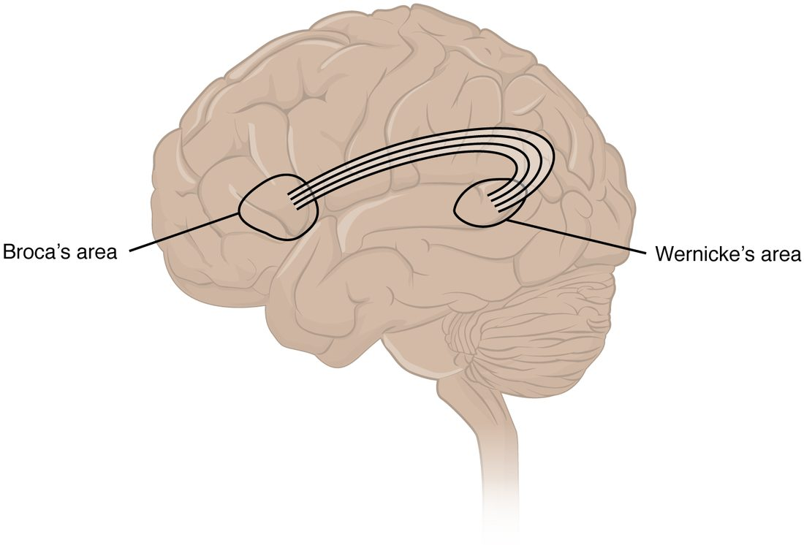

You can read this sentence, remember what you had for breakfast, and fall asleep tonight without thinking about any of it. Each of those depends on particular parts of the brain doing particular jobs. This page covers the brain's functional areas, memory and sleep: the motor, sensory and association areas of the cerebral cortex, the body maps laid out along two gyri, why the two hemispheres specialize, the language areas and the aphasias that follow damage to them, how memories form and are stored, and what the brain does across a night's sleep.
One area, one job: localization of function
In 1861 the French physician Paul Broca examined a patient who understood speech but could say only one syllable, "tan." After the man died, Broca found damage in one small patch of the left frontal lobe. It was early evidence for localization of function: particular areas of the cerebral cortex do particular jobs.
In 1909 the anatomist Korbinian Brodmann mapped the cortex by how its cells are layered and packed. He found about 52 regions, now called Brodmann's areas and still known by his numbers. Many of his boundaries turned out to match functional areas, so you will see the numbers in clinical reports: area 4, for example, is the primary motor cortex.
The cortex holds three kinds of functional area (Figure 1). Take one example: you look at a coffee mug.
- A primary sensory cortex receives the raw signal first. The primary visual cortex picks out edges, contrast, color and movement, but on its own it does not know what the object is.
- An association area next to it interprets that signal within the one sense. The visual association area puts the edges together and recognizes a mug.
- A multimodal integration area (multi- = many, modus = kind) combines senses with memory. You know the mug is yours, that it is hot, and where it sits relative to your hand.
Movement runs the other way: association areas plan it, and a primary area sends it out.
![A side view of the left hemisphere with its functional areas shaded. In the frontal lobe, a green strip just in front of the central sulcus is the primary motor cortex, with a motor association area and a frontal eye field in front of it; a circle low in the frontal lobe marks Broca's area, within the prefrontal cortex. Just behind the central sulcus a dark pink strip is the primary somatosensory cortex, with a sensory association area behind it. A circle in the upper temporal lobe marks Wernicke's area. At the back of the occipital lobe is the primary visual cortex with the visual association area around it, and in the temporal lobe the primary auditory cortex with the auditory association area. A dotted outline where the parietal, temporal and occipital lobes meet marks a general interpretation area.](../figures/os-16-5.jpg)
The motor areas
- The primary motor cortex is the precentral gyrus, the gyrus just in front of the central sulcus (Brodmann area 4). Its neurons send axons down the brainstem and spinal cord to the motor neurons that drive skeletal muscles on the opposite side of the body. Damage causes weakness of the opposite side.
- The premotor cortex (also called the premotor area or motor association area) lies just in front of it, on the lateral surface. The supplemental motor area lies in front of it on the medial surface. Both plan movements and put them in sequence before the primary motor cortex sends them out. They are active when you only imagine a movement. Damage leaves strength normal but makes learned sequences, such as buttoning a shirt, hard to carry out.
- The frontal eye field, in front of the premotor cortex, moves both eyes voluntarily toward something you choose to look at.
The prefrontal cortex and executive function
In 1848 a railroad worker, Phineas Gage, survived an iron rod driven up through the front of his skull. He could still walk, talk and remember, but he became impulsive, rude and unable to keep to plans. The damage was in the prefrontal cortex (also called the prefrontal lobe), the front of the frontal lobe, ahead of the motor areas.
The prefrontal cortex runs executive function: the set of abilities that let you control your own behavior toward a goal. It includes:
- planning steps and switching between tasks
- holding information in mind while using it (working memory, below)
- holding back an impulse or an automatic response
- judging consequences, and behaving in ways that fit the social setting
The prefrontal cortex is the last part of the brain to finish maturing. Its connections are still being refined into the mid-twenties, which fits the greater risk-taking of adolescence.
The sensory areas
| Primary somatosensory cortex | Primary visual cortex | Primary auditory cortex | |
|---|---|---|---|
| Where | Postcentral gyrus, parietal lobe, just behind the central sulcus | Back of the occipital lobe, mostly on the medial surface | Top of the temporal lobe, inside the lateral sulcus |
| Brodmann areas | 3, 1 and 2 | 17 | 41 and 42 |
| Receives | Touch, pressure, vibration, temperature, pain and limb position | Vision | Sound |
| From which side | The opposite side of the body | The opposite half of the scene in front of you, from both eyes | Both ears, more from the opposite ear |
| Its association area | Behind it in the parietal lobe: recognizes objects by touch | Around it: recognizes objects and faces | Around it: recognizes sounds and words |
| Damage to the primary area | Numbness of the opposite side | Blindness in the opposite half of the scene | Little hearing loss, since each ear reaches both sides |
The primary somatosensory cortex (soma = body) is the postcentral gyrus. Together with the primary visual and primary auditory cortex, it is one of the primary sensory areas. Taste reaches a primary area in the insula, and smell reaches cortex on the underside of the temporal lobe.
Damage to an association area, with the primary area intact, gives a strange result: the person senses but cannot recognize. Someone with damage to part of the visual association area on the underside of the temporal lobe can see a face perfectly well but cannot tell whose it is, even their own spouse's.
The large multimodal integration area where the parietal, temporal and occipital lobes meet (labeled "general interpretation area" in Figure 1) builds a single picture of the body in space. In the right hemisphere it attends to both sides of space, so damage to the right parietal lobe can make a person ignore everything on their left: they eat only the right half of the plate and shave only the right side of the face.
Maps of the body: somatotopy
Touch your thumb, then your elbow, then your knee. Each touch lands on a different spot along the postcentral gyrus, and the spots are in body order. The body is laid out along the gyrus as a map. This point-to-point arrangement is called somatotopy (soma = body, topos = place), and the map is a somatotopic map, a kind of topographical map.
Follow the map in Figure 2:
- The feet and legs sit on the medial surface of the hemisphere, hanging down into the longitudinal fissure.
- The hip, trunk, shoulder and arm follow over the top of the brain.
- The hand and fingers take a large stretch on the lateral surface.
- The face, lips, tongue and throat lie lowest, just above the lateral sulcus.

The map is not to scale. Drawn with each part sized by the cortex it gets, the body becomes the sensory homunculus (homunculus = little man): huge hands, lips and tongue on a small trunk. The reason is density:
- Your fingertips and lips have far more sensory receptors per square centimeter than your back.
- Each sensory receptor's signal needs neurons in the cortex to receive it.
- So the fingertip needs much more cortex than the same patch of back. That is why you can tell two pin points apart when they are 2 to 3 mm apart on a fingertip but need them about 4 cm apart on your back.
The primary motor cortex, just in front across the central sulcus, has a matching motor homunculus. Its hands, lips and tongue are large because fine, independent control of their many small muscles needs many cortical neurons.
The map predicts what damage does. Loss of blood flow to the medial surface of the right frontal and parietal lobes weakens and numbs the left leg and foot but spares the left hand and face.
Other primary areas have maps too. The primary visual cortex maps the scene in front of you point by point, and the primary auditory cortex is laid out from low notes to high notes.
Two hemispheres, different specialties
The two hemispheres look alike, but they are not doing identical jobs. The difference between them in function is called cerebral lateralization (later- = side).
- Language is handled mainly by the left hemisphere in about 95% of right-handed people and roughly 70% of left-handed people.
- The right hemisphere leads in attending to both sides of space, recognizing faces, and reading and producing the emotional tone of speech, such as hearing sarcasm in a voice.
Normally the corpus callosum shares everything between the two sides within milliseconds. Split-brain patients show what happens without it. For some severe seizures that spread from one side to the other, surgeons cut the corpus callosum. Afterward, if the person holds a key in the left hand without looking, the touch reaches only the right hemisphere. The person can pick the key out of a pile with the left hand, but cannot say its name, because the left hemisphere, which produces speech, never received the information.
The language areas
Two areas in the left hemisphere, joined by a band of white matter, are central to language (Figure 3):
- Broca's area is in the lower frontal lobe (Brodmann areas 44 and 45), just in front of the part of the primary motor cortex that controls the face, lips and tongue. It is needed to produce speech: putting words together fluently with correct grammar.
- Wernicke's area is at the back of the upper temporal lobe (area 22), next to the primary auditory cortex. It is needed to understand language, spoken or written, and to choose words with the right meaning.
- A curved band of axons, the arcuate fasciculus (arcuate = bowed, fasciculus = little bundle), connects Wernicke's area to Broca's area.

Here is the classic route for repeating a word you hear: the primary auditory cortex receives the sound, Wernicke's area recognizes the word, the arcuate fasciculus carries it forward, Broca's area assembles the speech plan, and the face area of the primary motor cortex drives the muscles of speech.
Aphasia (a- = without, phasis = speech) is a loss of language ability caused by brain damage. Damage at each point of that route gives a different pattern:
| Expressive aphasia | Receptive aphasia | Conduction aphasia | |
|---|---|---|---|
| Also called | Broca's aphasia, nonfluent aphasia | Wernicke's aphasia, fluent aphasia | — |
| Damage to | Broca's area | Wernicke's area | The connection between them |
| Speech | Slow, effortful, few words, little grammar ("Walk... dog... park") | Fluent, normal rhythm, but wrong or made-up words and little meaning | Fluent, with some wrong sounds in words |
| Understanding | Mostly good | Poor | Good |
| Repeating a phrase | Poor | Poor | Poor, out of line with good speech and understanding |
| Aware of the problem? | Usually, and frustrated | Often not | Usually |
| Often comes with | Weakness of the right face and arm, since the motor areas lie next door | Little or no weakness | Little or no weakness |
Aphasia is a language problem, not a muscle problem. A person with weak or poorly coordinated speech muscles slurs words but chooses and understands them normally, and can still write a correct sentence. A person with aphasia usually has the same trouble writing as speaking.
Memory: stages and kinds
Someone reads you a phone number. You repeat it to yourself while you dial, and a minute later it is gone. Your own phone number, by contrast, stays for years. These are different stages of memory, the brain's ability to store information and bring it back later.
Stages
- Short-term memory holds information for seconds to a minute or so, unless you keep rehearsing it. It holds only a few items at a time.
- Working memory is short-term memory in use: holding the phone number while you dial, or carrying a digit in mental arithmetic. It depends heavily on the prefrontal cortex. Its capacity is small, about four chunks of information, where a chunk is any unit you already know as one thing, such as a familiar area code.
- Long-term memory stores information for days to a lifetime, with no known upper limit on capacity.
Kinds of long-term memory
| Declarative (explicit) memory | Procedural (nondeclarative) memory | |
|---|---|---|
| What it stores | Facts and events you can put into words | Skills and habits you perform without putting them into words |
| Types and examples | Episodic memory of events (your last birthday); semantic memory of facts (Paris is in France) | Riding a bike, typing, tying a shoelace |
| Recalled | Consciously | By doing the task |
| Structures needed to form it | Hippocampus and nearby temporal lobe cortex; stored in the cerebral cortex | Basal nuclei and cerebellum |
| Speed of learning | Can form after one experience | Usually builds with practice |
The amygdala adds a boost: events with strong emotion, especially fear, are stored more strongly. That is why you remember where you were during a frightening event.
How memories form: consolidation
A new declarative memory is not stored in finished form straight away. It goes through memory consolidation (con- = together, solidus = firm): the change from a fragile new trace into a stable long-term one.
- During an experience, groups of cortical neurons fire for its sights, sounds and meanings, each in its own area.
- The hippocampus links these scattered groups into one memory; afterward, recalling part of it can bring back the rest.
- Over the following days to years, especially during sleep, the hippocampus replays the pattern. Each replay strengthens the direct connections between the cortical groups.
- In the end the cortex can recall the memory without the hippocampus.
What changes at the synapse
Memory is stored as changes in the strength of synapses. The best-studied change is long-term potentiation, a lasting strengthening of a synapse after it is used intensely:
- A presynaptic neuron fires repeatedly and releases glutamate.
- The postsynaptic neuron is strongly depolarized, which lets calcium ions flow in through a special type of glutamate receptor protein.
- The calcium triggers the insertion of more glutamate receptor proteins into the postsynaptic membrane.
- The next release of the same amount of glutamate now produces a larger EPSP. The synapse has been strengthened, and with long-lasting use it can grow new synaptic connections too.
This is the cellular form of "neurons that fire together wire together."
Amnesia
Amnesia (a- = without, mnesis = memory) is loss of memory. It comes in two directions, measured from the moment of the injury:
- Anterograde amnesia (antero- = forward): inability to form new declarative memories after the injury.
- Retrograde amnesia (retro- = backward): loss of memories formed before the injury. Recent memories are lost first, because they are the least consolidated. Old ones, already stored in the cortex, survive best.
The clearest case is Henry Molaison, known for decades as H.M. In 1953 surgeons removed the inner part of both temporal lobes, including much of each hippocampus, to stop his seizures. The seizures improved, but he could not form new declarative memories for the rest of his life. He met his researchers as strangers at every visit. His general knowledge from before the surgery was largely kept, though he lost much of the decade just before it; his personality and intelligence were unchanged, and he could still learn new skills: he got steadily better at a mirror-drawing task over several days while insisting each time that he had never done it. His case showed that the hippocampus is needed to form new declarative memories, that facts learned long ago do not depend on it, and that procedural memory uses different structures.
A concussion often causes a short gap of both kinds: the person cannot remember the minutes before the blow or the first hours after it.
Consciousness
Being conscious needs two things working together. The reticular activating system in the brainstem keeps the cortex awake by sending a steady stream of signals up through the thalamus. The cerebral cortex, on both sides, supplies what you are aware of. Loss of either one causes coma: damage to the reticular activating system in the upper brainstem, or widespread damage to both hemispheres. Damage to one hemisphere alone does not.
Sleep differs from coma in one simple way: a sleeping person can be woken by a strong enough stimulus, such as noise or a shake, and a person in a coma cannot.
Recording the brain: the EEG
An electroencephalogram (EEG; electro- = electric, encephal- = brain, -gram = record) records the brain's electrical activity through electrodes on the scalp.
What it picks up is not action potentials. It is the summed EPSPs and IPSPs of millions of cortical neurons that lie side by side with their dendrites pointing the same way. When many of them receive synaptic input at the same moment, their small currents add up to a signal big enough to reach the scalp.
- When you are awake and thinking, groups of neurons work on different things at different times. Their activity is out of step, so the EEG shows fast, small, irregular waves.
- In deep sleep, huge numbers of neurons swing up and down together. Their activity is in step, so the EEG shows slow, large waves.
The waves are named by frequency, in cycles per second (Hz), in Figure 4.
The stages of sleep
Sleep has two main states, which alternate through the night.
Non-REM sleep
Non-REM sleep has three stages, from light to deep:
- N1: the drift into sleep, lasting a few minutes. Alpha waves give way to theta waves. You are easily woken and may not feel you were asleep.
- N2: true light sleep and the stage you spend the most time in, about half the night. Theta waves are broken by brief bursts of faster waves (sleep spindles) and single large waves (K-complexes).
- N3: deep sleep, also called slow-wave sleep. Delta waves dominate. Heart rate, blood pressure and breathing slow down and become regular, and you are hardest to wake. Sleepwalking and night terrors start in this stage.
REM sleep
REM sleep is named for the rapid eye movements that happen during it. It is a strange mix:
- The EEG looks like the awake brain: fast, small, out-of-step waves.
- This is when most vivid, story-like dreams happen.
- Brainstem neurons actively block the motor neurons to almost all skeletal muscles, so the body is limp. Only the eye muscles and the diaphragm keep working. This paralysis stops you acting out your dreams.
- Heart rate and breathing become irregular.
| Non-REM sleep (N3) | REM sleep | |
|---|---|---|
| EEG | Slow, large delta waves (neurons in step) | Fast, small waves, like being awake |
| Skeletal muscles | Relaxed but can move; you shift position | Paralyzed except eye muscles and diaphragm |
| Eyes | Still | Rapid darting movements |
| Heart rate and breathing | Slow and regular | Irregular |
| Dreams | Few, brief and thought-like | Frequent, vivid, story-like |
| When in the night | Mostly in the first half | Periods lengthen toward morning |
A night of sleep
The stages repeat in cycles of about 90 minutes, four to six times a night (Figure 5). The cycles are not all alike:
- Early cycles hold long stretches of N3 and only short REM periods.
- Later cycles have little or no N3, and the REM periods grow longer, up to 30 to 60 minutes near morning. That is why you often wake from a dream.
![A graph of sleep stages across an 8-hour night. The vertical axis lists, from top to bottom, awake, REM, N1, N2 and N3 (deep); the horizontal axis shows hours 0 to 8 after lights out. The line drops from awake through N1 and N2 to N3 within the first hour, then cycles up and down about every 90 minutes. Long periods of N3 occur in the first two cycles, a short one in the third, and none after about 4 hours. REM periods, highlighted in color, are short early in the night (about 10 minutes at 1.4 hours) and get longer toward morning (about 40 minutes near 7 hours). Brief awakenings occur late in the night.](../figures/sleep-hypnogram.svg)
What makes you sleepy
Two processes set when you fall asleep:
- Sleep pressure. While you are awake, active neurons use ATP and release its breakdown product adenosine. Adenosine builds up outside the cells and binds to receptor proteins that inhibit neurons in the arousal systems, making you sleepier the longer you stay awake. Sleep clears it. Caffeine blocks those adenosine receptor proteins, which is why coffee holds sleepiness off.
- The daily timing signal. A small group of neurons in the hypothalamus runs a roughly 24-hour rhythm, reset each day by light reaching the eyes, that promotes waking in the day and sleep at night. You will meet it with the endocrine glands.
Sleep is not the brain switching off. During slow-wave sleep the hippocampus replays the day's patterns to the cortex, which helps consolidate declarative memories; people who sleep after learning remember more than people who stay awake for the same time.
Summary
Particular cortical areas do particular jobs, and Brodmann's numbers name many of them. The primary motor cortex (precentral gyrus) sends commands to the opposite side, with the premotor and supplemental motor areas planning them and the prefrontal cortex running executive function. The primary somatosensory (postcentral gyrus), visual (occipital) and auditory (temporal) cortices receive signals first; association areas interpret them, and multimodal integration areas combine them. The body is mapped along the pre- and postcentral gyri, with the largest areas for the hands, lips and tongue. The hemispheres specialize: language is usually left, spatial attention right. Damage to Broca's area causes expressive aphasia, to Wernicke's area receptive aphasia, and to the link between them conduction aphasia. Short-term and working memory hold a few items briefly; the hippocampus consolidates declarative (including episodic) memories into the cortex, while procedural memory uses the basal nuclei and cerebellum; losing the hippocampi causes anterograde amnesia. The EEG records summed synaptic potentials; sleep cycles every 90 minutes through non-REM stages N1 to N3 and REM sleep, with N3 early in the night and REM lengthening toward morning.